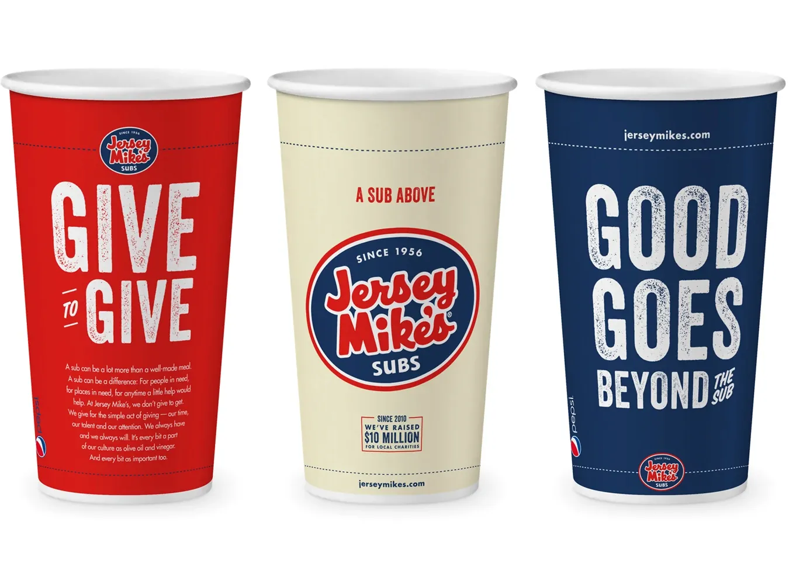
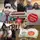
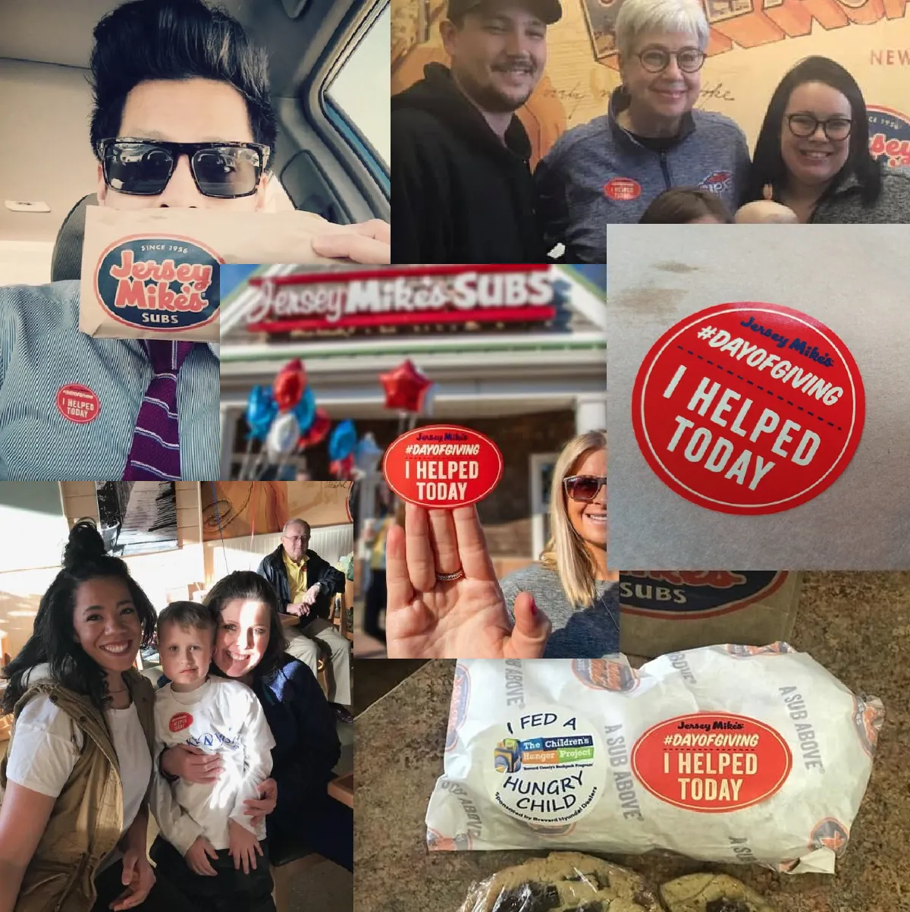

Loading spot
TV spot: Be a Sub Above (:30, national)Watch on YouTubeWriter: Brianna Delphy
Loading spot
TV spot: Day of Giving (national)Watch on YouTube

In-store cup design
Loading spot
TV spot: Nominate a Sub Above (national)Watch on YouTube
Loading spot
Long-form social: 2018 inaugural Sub Abovers recipientsWatch on YouTube


Day of Giving sticker: user-generated posts
Click, swipe or use arrow keys